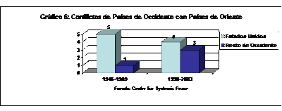

Para aquelas pessoas que cismam que sou anti-americano
digo que sou mesmo. Mas aqui está a razão:O que se pode observar é que os Estados Unidos provocou, durante a Guerra Fria mais de 80% dos conflitos entre a civilização ocidental e as demais civilizações, sem considerarem-se os choques diretos deste com a União Soviética e os processos de descolonização na África e Ásia. Desde a queda do muro de Berlim o mesmo Estados Unidos vem gerando mais de 50% dos conflitos entre a civilização ocidental e as demais. Caberia-nos corrigir a Huntington no sentido de afirmar que não é a civilização ocidental que enfrentará, no futuro, as outras culturas, mas sim que os Estados Unidos enfrentará as demais culturas de forma unilateral ou formando alianças ofensivas.
{kind=link}

Há sempre algo a fazer. Temperar as emoções com leitura e reflexão.
eu sou extremista e pouco há a fazer.
Com certeza que não é suficiente para qualificar um país. Temos (pelo meno)um excelente contra-exemplo: a coreia do norte. Não tem participado em quaisquer guerras e o que é que isso revela acerca do funcionamento daquele país? Nada.
Avanço outra ideia que sei ser polémica: a guerra nem sempre é imoral.
Note-se que o que acabo de dizer não invalida a minha posição crítica em relação a muitas das políticas norte-americanas.